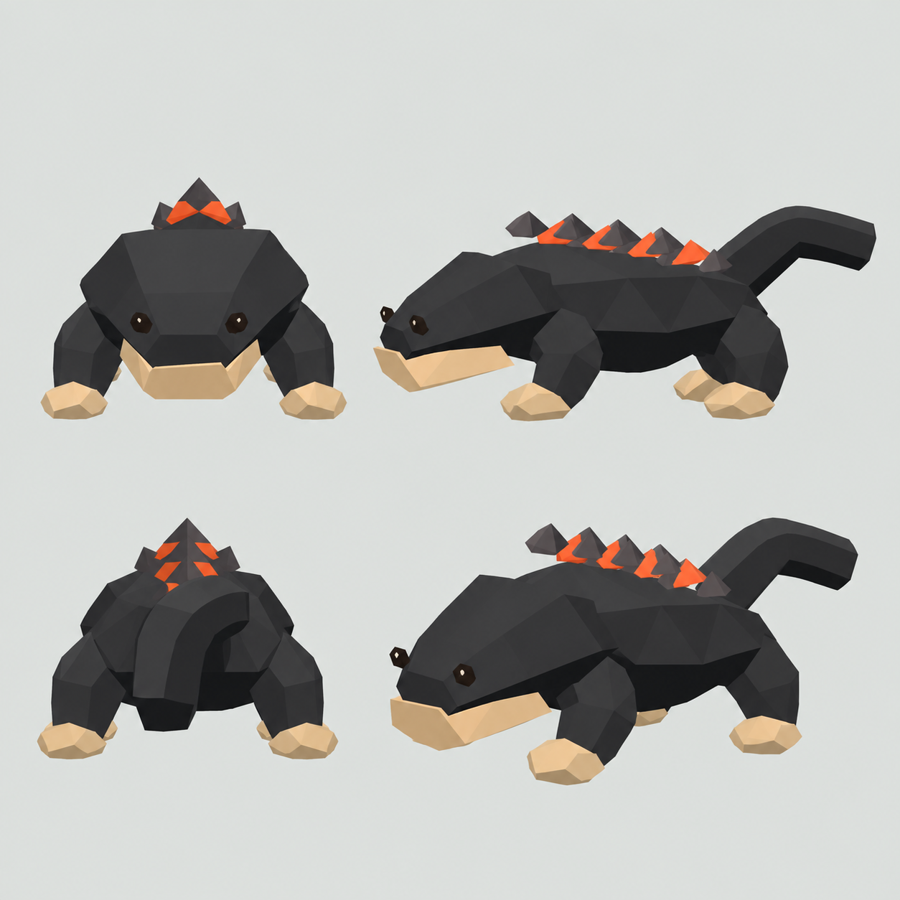
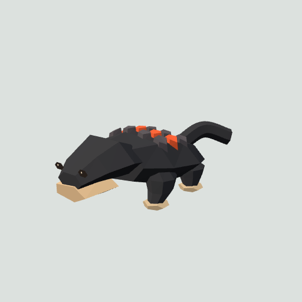
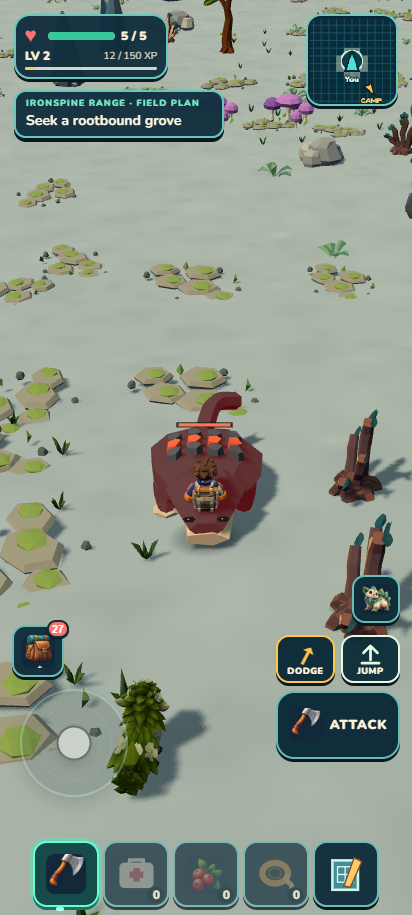
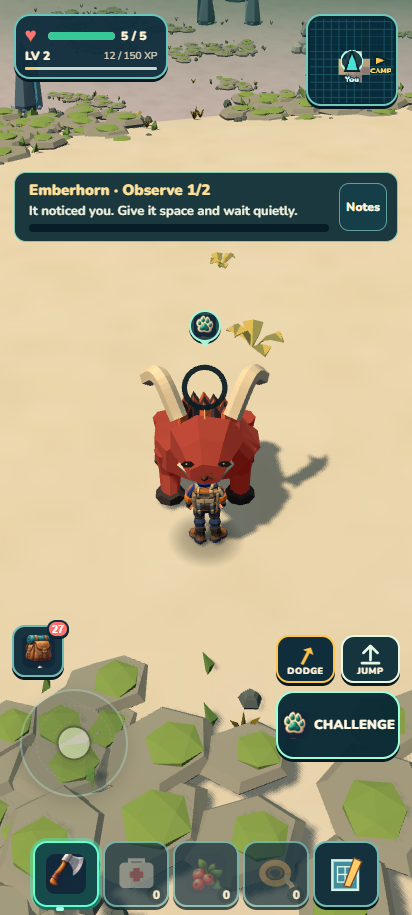

Cinderjaw R2 passes independent visual review8.1 and actual factory-fixture compatibility:28meshes/928triangles, broader attached legs and low seated dorsal shingles. Six sibling species and twelve protected components remain exact. No Cinderjaw continent spawn or gameplay change is admitted. Emberhorn's earlier encounter used its old baked recipe; that acceptance was reopened and is now restored by focused rebake, actual factory parity and a fresh natural Sunscar warning/charge/recovery encounter. Both reviewed models reach the actual packaged game. All1,426tests, verify and ZIP pass; ZIP21596141bytes/unpacked46327849bytes. Portable Sunscar continuation and original earned Camp, plus developer original Camp, compare exactly with no errors or external requests.




Independent visual review · Fixture runtime review · Full factory parity · Packaged factory proof · Required checks · Exact save continuation · Measured checkpoint
Next: Ironspine missing-bank plan and separate build; Shatterfen dedicated planning and high-quality targets. Continuous goal remains active. No push.